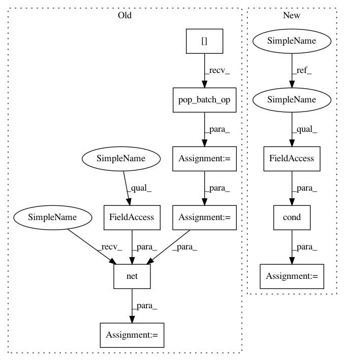

53633acd7c861fd73e3954088a48d0ac8dc42895,niftynet/application/gan_application.py,GANApplication,connect_data_and_network,#GANApplication#Any#Any#,132
Before Change
learning_rate=self.action_param.lr)
// a new pop_batch_op for each gpu tower
data_dict = self.get_sampler()[0].pop_batch_op()
images = tf.cast(data_dict["image"], tf.float32)
noise_shape = [self.net_param.batch_size,
self.gan_param.noise_size]
noise = tf.Variable(tf.random_normal(shape=noise_shape,
mean=0.0,
stddev=1.0,
dtype=tf.float32))
tf.stop_gradient(noise)
conditioning = data_dict["conditioning"]
net_output = self.net(noise,
images,
conditioning,
self.is_training)
loss_func = LossFunction(
loss_type=self.action_param.loss_type)
real_logits = net_output[1]
After Change
super(SegmentationApplication, self).initialise_network()
self.net = ApplicationNetFactory.create(self.net_param.name)()
def connect_data_and_network(self,
outputs_collector=None,
gradients_collector=None):
if self.is_training:
def data_net(for_training):
with tf.name_scope("train" if for_training else "validation"):
sampler = self.get_sampler()[0][0 if for_training else 1]
data_dict = sampler.pop_batch_op()
images = tf.cast(data_dict["image"], tf.float32)
noise_shape = [self.net_param.batch_size,
self.gan_param.noise_size]
noise = tf.random_normal(shape=noise_shape,
mean=0.0,
stddev=1.0,
dtype=tf.float32)
conditioning = data_dict["conditioning"]
return self.net(noise, images,
conditioning, for_training)
with tf.name_scope("Optimiser"):
optimiser_class = OptimiserFactory.create(
name=self.action_param.optimiser)
self.optimiser = optimiser_class.get_instance(
learning_rate=self.action_param.lr)
// a new pop_batch_op for each gpu tower
net_output = tf.cond(self.is_validation,
lambda: data_net(False),
lambda: data_net(True))
loss_func = LossFunction(
loss_type=self.action_param.loss_type)
real_logits = net_output[1]
In pattern: SUPERPATTERN
Frequency: 3
Non-data size: 10
Instances
Project Name: NifTK/NiftyNet
Commit Name: 53633acd7c861fd73e3954088a48d0ac8dc42895
Time: 2017-11-01
Author: eli.gibson@gmail.com
File Name: niftynet/application/gan_application.py
Class Name: GANApplication
Method Name: connect_data_and_network
Project Name: NifTK/NiftyNet
Commit Name: dfdad808d0979d6e45419720fa0d73b4cedcbb96
Time: 2017-11-01
Author: eli.gibson@gmail.com
File Name: niftynet/application/segmentation_application.py
Class Name: SegmentationApplication
Method Name: connect_data_and_network
Project Name: NifTK/NiftyNet
Commit Name: 53633acd7c861fd73e3954088a48d0ac8dc42895
Time: 2017-11-01
Author: eli.gibson@gmail.com
File Name: niftynet/application/gan_application.py
Class Name: GANApplication
Method Name: connect_data_and_network
Project Name: NifTK/NiftyNet
Commit Name: 53633acd7c861fd73e3954088a48d0ac8dc42895
Time: 2017-11-01
Author: eli.gibson@gmail.com
File Name: niftynet/application/regression_application.py
Class Name: RegressionApplication
Method Name: connect_data_and_network